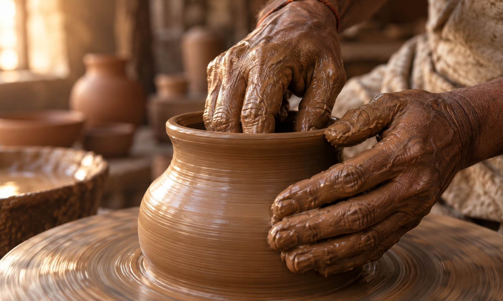
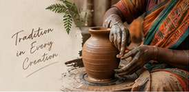

Craft
Made by Hand
Every creation carries the texture of natural clay and the care of hands that shape, fire and finish it.

Craft
Every creation carries the texture of natural clay and the care of hands that shape, fire and finish it.

Purpose
We help traditional clay craftsmanship reach everyday homes through thoughtful decor, utensils, earthen pots and jewelry.